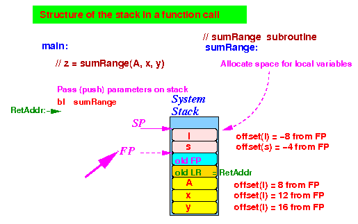
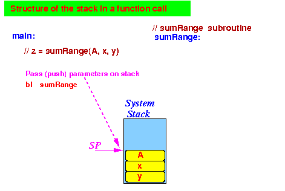

- Consider the following
function invocation:
/* ------------------------------------------------------- sumRange(A,a,b): returns (A[a] + A[a+1] + ... + A[b-1]) ------------------------------------------------------- */ int sumRange(int[] A, int a, int b ) { int i, s; s = 0; for (i = a, i < b; i++) s = s + A[i]; return(s); } void main( ) { int[] A = {11,12,13,14,15,16,17,18,19,20}; int x, y, z; z = sumRange(A, x, y); }Important note: how to pass an array to a function
- An array is
passed by
passing the
base address of
the array
Because if we know the base address of an array, we can find all elements in the array
- An array is
passed by
passing the
base address of
the array
- We will pass the parameters
and allocate the local variables
as follows
using the system stack:

We will use register r0 to pass the return value back to the caller
- Using the
agreed registers,
the main( ) method
will pass the
parameters x and y
and
use the return value
as follows
(illustrtated in assembler code):
// Java statement: sum = sumRange(A, a, b): /* ------------------------------------------------- Pass 3nd parameter value b using the stack ------------------------------------------------- */ movw r0, #:lower16:b movt r0, #:upper16:b ldr r0, [r0] push {r0} /* ------------------------------------------------- Pass 2nd parameter value a using the stack ------------------------------------------------- */ movw r0, #:lower16:a movt r0, #:upper16:a ldr r0, [r0] push {r0} /* ------------------------------------------------------- Pass 1st parameter address of array A using the stack ------------------------------------------------------- */ movw r0, #:lower16:A movt r0, #:upper16:A push {r0} /* ----------------------------------------------------------------  call sum = sumRange(A, a, b) agreed inputs: r0 = addr of array A, r1 = a, r2 = b agreed return: r0 = return value ---------------------------------------------------------------- */ bl sumRange add sp, sp, #12 // Clean up the 3 int parameters off the stack /* ----------------------------------------------------------------- Save return value (in r0) to variable sum (sum = sumRange(..)) ----------------------------------------------------------------- */ movw r1, #:lower16:sum // Do NOT use r0 !!! movt r1, #:upper16:sum // (Because r0 contains the return value) str r0, [r1] // This will store return value in sumImportant note:
- When the sumRange
function retruns,
the 3 parameters that were
pushed will
still be
on the stack !!!
Therefore: the caller function must clean up the pushed parameters when the function returns !!!
- When the sumRange
function retruns,
the 3 parameters that were
pushed will
still be
on the stack !!!
- The sumRange( ) method
will first save the
register LR and FP
on the stack
and
allocate 2 local variables
as follows
(illustrtated in assembler code):
/* ---------------------------------------------------------------- Function sumRange(a,b): agreed inputs: A, a, b on stack agreed return: r0 = return value Unused registers: r0, r1, r2, r3, r4, r5, r6, r7, r8, r9, r10 Use stack to store local vars Body of sumRange(A,a,b): s = 0; for (i = a, i < b; i++) s = s + A[i]; return(s); ---------------------------------------------------------------- */ sumRange: // When sumRange begins, we will have the parameters on the stack: /* ========================================================== Function Prelude: complete the stack frame structure ========================================================== */ push {lr} // Save LR (return address) push {fp} // Save FP (used by caller) mov fp, sp // Mark the stack top location before // allocating any local variables sub sp, sp, #8 // Allocate 2 int variables on the stack /* =============================================== We completed the stack frame Now we can write the function body =============================================== */ // s = 0 mov r0, #0 // offset(local var s) = -4 from FP str r0, [fp, #-4] // s = 0 // i = a ldr r0, [fp, #12] // offset(param a) = 12 from FP str r0, [fp, #-8] // offset(loca var i) = -8 from FP while: // while (i < b) //// Get i into r0 ldr r0, [fp, #-8] // offset(local var i) = -8 from FP //// Get b into r1 ldr r1, [fp, #16] // offset(b) = 16 from FP //// Check for (i < b) cmp r0, r1 // r0 = i, r1 = b bge whileEnd // Exit while loop if FALSE // s = s + A[i]; ///// get A[i] into r10 ldr r0, [fp, #8] // r0 = addr of array A ldr r1, [fp, #-8] // r1 = i add r1, r1, r1 // r1 = 2*i add r1, r1, r1 // r1 = 4*i = offset used to access A[i] ldr r10, [r0, r1] // r10 = A[i] (r0=A(base), r1=offset) ///// get s into r0 ldr r0, [fp, #-4] // r0 = s ///// compute s + A[i] add r0, r0, r10 // r0 = s + A[i] ///// Save sum in memory variable s str r0, [fp, #-4] // s = s + A[i] // i++ ldr r0, [fp, #-8] // r0 = i add r0, r0, #1 // r0 = i+1 str r0, [fp, #-8] // i = i+1 b while // End of while body - loop back !! whileEnd: // return(s) //// Put the return value in the agreed register (r0) ldr r0, [fp, #-4] // r0=s /* ============================================================= Function Postlude: de-allocate local variable and restore FP ============================================================= */ mov sp, fp // De-allocate local variables pop {fp} // Restore fp pop {pc} // Return to the caller
- Example Program:
(Demo above code)

- Prog file: /home/cs255001/demo/asm/8-sub/stack1.s
How to run the program:
- To compile: as255 stack1
- To run: use EGTAPI